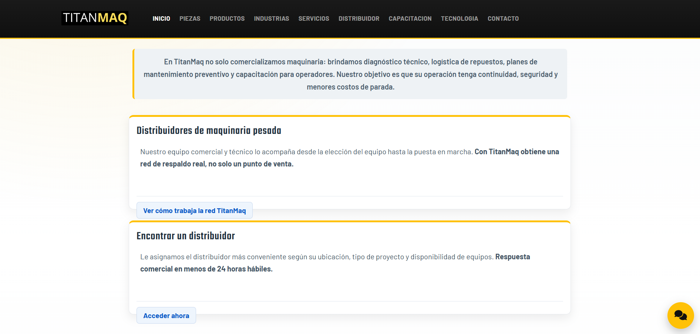
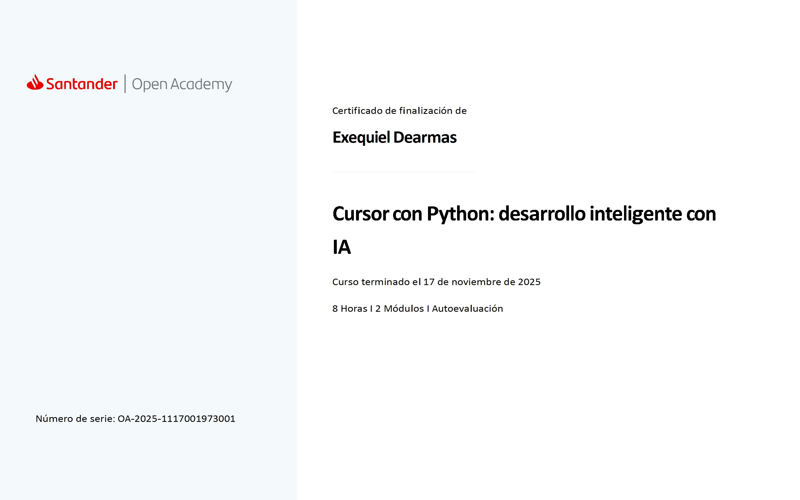
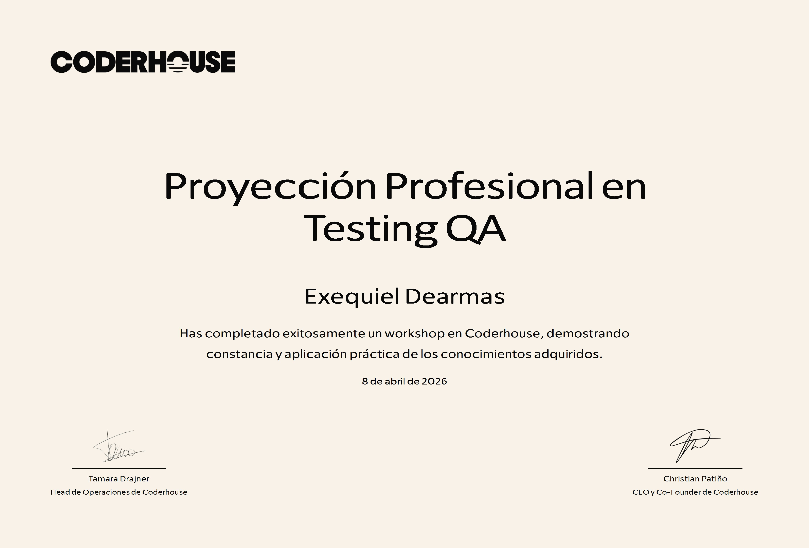

Full stack para equipos y clientes
Edxear es mi identidad profesional para presentar una evolucion tecnica enfocada en productos web reales y bien resueltos.
Desarrollador full stack en formacion
Perfil orientado a equipos de desarrollo, primeras oportunidades IT y colaboraciones que necesiten una base tecnica seria en frontend, React, backend y aprendizaje continuo aplicado a productos web reales.
Perfil
Exequiel Dearmas, tambien identificado como Edxear, construye su perfil alrededor de desarrollo web, React, JavaScript, backend y aprendizaje continuo en Python aplicado e introduccion a QA.
Sobre mi
Estoy construyendo mi camino como desarrollador full stack, combinando una base practica en desarrollo web, JavaScript, React y backend con una mentalidad de aprendizaje continuo. Me interesa crear productos funcionales, claros y bien estructurados, cuidando tanto la experiencia de usuario como la logica que sostiene cada aplicacion.
Para equipos y recruiters
Mi objetivo es seguir creciendo en proyectos donde pueda participar tanto en la construccion de interfaces modernas como en el diseño de servicios backend, integraciones y arquitectura de aplicaciones. Busco consolidar un perfil versatil, capaz de aportar en todo el flujo de desarrollo.
Para clientes y colaboraciones
Me interesa desarrollar sitios y aplicaciones que no solo funcionen bien, sino que tambien comuniquen profesionalismo, orden y confianza. Puedo aportar una base tecnica en crecimiento con criterio para construir soluciones web claras y utiles.
Fortalezas actuales
Mi formacion me dio una progresion clara desde maquetacion y logica con JavaScript hasta React, backend avanzado, arquitectura backend y una primera aproximacion a Python con IA y testing QA. Eso me permite entender el desarrollo como un sistema completo, no como piezas aisladas.
Proyecto destacado
TitanMaq es un sitio estatico orientado a presentar maquinaria, servicios, soporte y contacto comercial con una identidad visual industrial, navegacion clara y experiencia responsive en todo el recorrido.

TitanMaq
Objetivo principal: presentar catalogo y soluciones, facilitar contacto comercial y soporte, guiar al usuario entre paginas clave con una navegacion consistente y reforzar la percepcion de marca.
Vista de distribucion total:
TitanMaq es una web corporativa multipagina desarrollada con HTML, SCSS y JavaScript, enfocada en presentar productos y servicios de maquinaria pesada con experiencia responsive y consistente. Incluye layout reutilizable con parciales, compilacion Sass, QA automatizada y un chatbot contextual para asistencia comercial y tecnica.
Formacion y certificados
La base academica visible combina cursos de Coderhouse y Santander Open Academy, con progresion desde desarrollo web hasta arquitectura backend, Python aplicado e introduccion a testing QA.

Coderhouse
38 horas · 10 semanas
Finalizado el 14 de mayo de 2025.

Coderhouse
20 horas · 10 semanas
Finalizado el 5 de agosto de 2025.

Coderhouse
16 horas · 8 semanas
Finalizado el 8 de octubre de 2025.

Santander Open Academy
8 horas · 2 modulos · Autoevaluacion
Finalizado el 17 de noviembre de 2025.

Coderhouse
18 horas · 9 semanas
Desarrollo avanzado de backend. Finalizado el 5 de enero de 2026.

Coderhouse
16 horas · 8 semanas
Diseño y arquitectura backend. Finalizado el 10 de marzo de 2026.

Coderhouse
Workshop certificado
Completado el 8 de abril de 2026.
Disponibilidad
Si buscas un perfil con base real en frontend, React, backend y capacidad de aprendizaje sostenido, puedo aportar compromiso, criterio tecnico y una comunicacion clara para seguir creciendo dentro de un equipo.